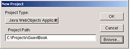
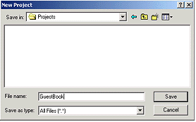
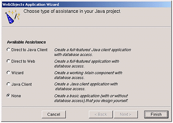

| PATH |

A WebObjects application project contains all the files needed to build and maintain your application. You use Project Builder to create a new project.
Launch Project Builder from the WebObjects program group in the Start menu.


The New Project panel shows the path you specified.
The WebObjects Application Wizard starts.

If you are developing an application that accesses a database, you may wish to use one of the levels of assistance that WebObjects provides. For more information on these options, see "Creating a WebObjects Database Application".
Project Builder creates a new application
directory called GuestBook.
This directory contains the files you work with in both Project
Builder and WebObjects Builder.
© 2001 Apple Computer, Inc.